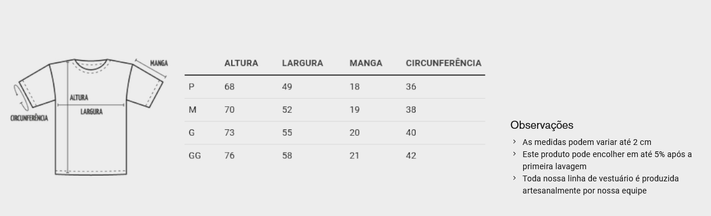

☎️ (19) 3231-2968
üìß marildablueberry@uol.com.br
⌚ Aberto das 09:00 - 17:00
Dark üåô
IN√çCIO üè†
SOBRE N√ìS üìò
OR√áAMENTO üìÑ
PRODUTOS üîç
Mais Detalhes
Camiseta
Camiseta ou t-shirt é uma camisa pequena, de mangas curtas ou mangas longas, geralmente confeccionada em algodão e mais recentemente em vários outros materiais, tais como poliéster famoso Dry-fit.

Mais Detalhes
Gola Polo
A principal diferença entre a camiseta comum e a camisa polo é a presença da gola, essa caractisca tanto da nome a peça como passa mais seriedade, sendo facilmente adaptável a diversos segmentos e ocasiões.
Mais Detalhes
Agasalho Moletom
O moletom é uma malha de dupla face, com um lado de superfície lisa e o outro com felpa. Ele é tecido com dois fios de textura e espessura diferentes, sendo um grosso com tessitura mais flexível e isolante térmico e um mais fino que vem tricotando a meia malha, que dá o aspecto liso e mais firme destas duas faces.
Mais Detalhes
Abadá
A abadá é feita de helanca (ou cacharel), malha composta por 100% poliéster, e a mais usada para a produção de uniformes, abadás, vestuário esportivo e camisetas para blocos, micaretas, shows. Esse que contem tecnologias para diminuir o calor e o suor no corpo, além de serem resistentes a água.
Mais Detalhes
Ecobag
Ecobag se trata de uma sacola ou bolsa de tecido lavável e resistente, no caso o algodão cru, esse é um material sustentável, garantindo a sustentabilidade, sem comprometer o uso, a tornando reciclável e reutilizável para diversas funções.
Mais Detalhes
Máscara
Uma máscara é um acessório utilizado para cobrir o rosto. É utilizada para diversos propósitos, recentemente passamos por uma situação em que o uso de mascarás se tornou algo necessário, de uso diário. Normalmente feita com materiais sintéticos, algodão e outros tecidos. As mascarás confeccionadas com algodão possuem formatos e características que se distinguem entre si, algo que interfere apenas na estética das mesmas, sua funcionalidade portanto se mantem essencialmente a mesma.
Mais Detalhes
Bordado
Bordado é uma forma de criar, a mão ou a máquina, desenhos e figuras ornamentais em um tecido, utilizando, para este fim, diversos tipos de ferramentas como agulhas, fios de algodão, de seda, de lã, de linho, de metal etc., de maneira que os fios utilizados formem o desenho desejado, sendo largamente usado em bonés, camisetas polo, uniformes tanto para trabalho como para esportes em geral e assim enriquecendo a peça com detalhes e muitas veses brasões e figuras representativas de uma marca, escola, clube ou algo relacionado.
Mais Detalhes
Confecção
Uma confecção de roupas é uma empresa que transforma as matérias primas (tecidos, linhas, botões) em um produto final (camisas, uniformes, calças), seguindo uma produção em série, podendo ou não tercerizar uma ou mais das etapas do processo de produção, caso a empresa tenha outros serviços como: Bordado, Silkscreen, Customizações das peças confeccionadas, Arte finalização. Sendo capaz de produzir peças variadas de vestuário, sendo o foco de cada empresa variado.
Mais Detalhes
Silkscreen
O silk screen, também chamado de serigrafia, é um processo de impressão. Nessa técnica, que pode ser realizada por uma pessoa, de forma mecânica, ou automaticamente, por máquinas, a tinta é vazada, por meio da pressão de um rodo. Esse rodo é passado ao longo de um tela (feito de nylon ou seda), que é esticada em um bastidor de madeira ou de aço. Atualmente, o silk screen é o processo mais comum para se estampar camisetas, moletons, jeans e outras peças de roupas.